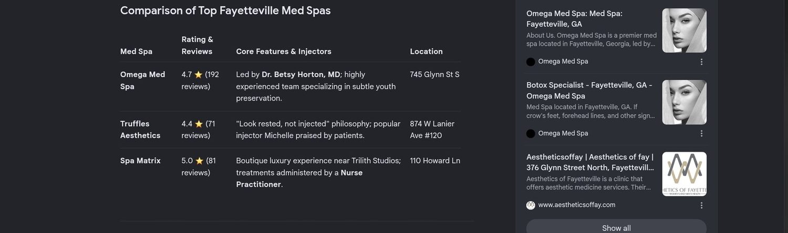

AI Visibility Audit · Med spas & cosmetic dentists
Does ChatGPT recommend your clinic — or the one down the street?
I test 12 real customer questions across 5 AI assistants and show you exactly why your clinic isn't being named, which competitor wins each question, and the 12 fixes that change it. $197. Delivered in 48 hours.

Try this before you read another word
Open ChatGPT, Gemini, or Perplexity on the phone in your hand and ask:
“Best [your service] in [your city]”
If your clinic isn't in the answer, a customer who asked that question today never saw you existed. There was no search result page to scroll, no map pack, no second chance — just three names, and yours wasn't one of them.
Why this is happening now
Traditional search volume is projected to fall around 25% as AI assistants absorb the questions people used to type into Google. That traffic didn't disappear — it moved into answers that name two or three businesses instead of ten.
Here's the part that catches clinic owners off guard: AI assistants don't simply read off Google's rankings. They cite what's easiest to quote and verify — pages that answer a question in plain language, businesses whose details are consistent everywhere, sources and directories the models already trust. That's why a clinic ranking #3 on Google can be invisible in AI answers while a smaller competitor gets named every time.
Your SEO report says rankings are stable. Your new-patient calls say otherwise. Both are true.
What you get for $197
- Your AI Visibility Score (0–100) across five pillars: citation presence, entity clarity, answer-ready content, structured data, third-party authority.
- 60 data points of evidence — 12 real customer questions run across ChatGPT, Gemini, Perplexity, Google AI Mode and Copilot, screenshotted with the prompt visible.
- A competitor citation table — which local competitor wins which question, and the specific reason each one wins.
- The sources AI trusts in your category, so you know where you need to exist.
- Your content gaps — the exact questions customers ask that your site never answers.
- Technical and schema findings, including whether you're accidentally blocking AI crawlers.
- 12 prioritized fixes, each with effort (15 minutes / 1 hour / 1 day) and who should do it.
- A 30-day action plan broken into four weekly blocks, so nobody has to decide what to do first.
- A 5-minute video walkthrough where I talk through your score and top three fixes by name.
Don't take my word for any of it.
Read a complete audit — the real report, the real screenshots, the real fixes — before you spend anything.
See a full sample auditHow it works
- You pay. Card checkout, 40 seconds. No call, no proposal, no sales meeting.
- You fill a 3-minute form. Your city, your services, your top three competitors.
- I run the tests and build your report. 12 questions × 5 assistants, by hand.
- You get the PDF and video in 48 hours, straight to your inbox.
Price
Founding rate — first 5 clinics
Why the discount is real: I want five named case studies. When the fifth clinic books, the price goes to $197 and stays there.
Agencies charge $1,000–$5,000 for a comparable one-time AI visibility audit, and $1,000–$3,500 a month for ongoing work. I'm one person with a repeatable process and no overhead, so I can charge a fraction of that for the same finding.
One recovered patient is worth $3,000–$10,000 to your clinic over their lifetime. This costs less than the margin on a single treatment.
Secure card checkout. Prefer PayPal or an invoice? Email me.
Add the Fix Pack (+$67)
Available as a checkbox at checkout. I don't just tell you what to change — I write it: your homepage answer block, a 10-question FAQ section in your voice, ready-to-paste FAQ and LocalBusiness schema, and five citation-source submissions. You forward it to whoever runs your site and it's done.
The Findings Guarantee
If your audit doesn't surface at least 10 specific, actionable fixes, tell me within 14 days and I'll refund you in full — and you keep the report.
What I don't promise: rankings, citations, traffic or revenue. Those depend on the fixes actually getting made, and on systems neither of us controls. What I promise is that you'll know exactly where you stand and exactly what to change.
Questions clinic owners ask
Is this just SEO with a new name?
No. SEO asks "where do we rank on a results page." This asks "are we named in the answer, and if not, who is and why." Different signals, different fixes, different report. It complements the SEO you already pay for — and it usually explains why that SEO stopped producing calls.
Will this work if my website is old or built on Wix/Squarespace?
Yes. Most of the 12 fixes are content and profile changes, not rebuilds. Platform barely matters; being quotable does.
Do I need a developer to act on it?
Usually not. Every fix is labeled by effort and by who should do it — most are front-desk or marketing tasks. Two or three may need whoever manages your site. If you'd rather not touch any of it, the Fix Pack writes the pieces for you.
How is this different from the report my agency sends?
Your agency's report shows Google rankings and traffic. This shows the actual words five AI assistants say about your clinic to a prospective patient, with screenshots. Bring it to your agency — most will thank you for it.
What if I'm already being cited?
Then you'll get a high score, proof of it, and the specific gaps that keep you from winning the remaining prompts — including which competitor is closest behind you. Knowing you're winning is worth knowing too.
Do you do the fixes for me?
The audit is analysis. The Fix Pack (+$67) writes your content and schema. If you want it all implemented, I offer an Implementation Sprint to audit clients afterward.
How fast, really?
48 hours from the moment your intake form arrives, and I reply to emails within one business day. If I'm ever going to miss that, you'll hear it from me first.
What if I don't like it?
The Findings Guarantee above. No forms, no interrogation — one email and you're refunded.
Who you're buying from
your real face
Jason Berry — I run CiteReady on my own. I built this because I kept asking AI assistants for local businesses and watching good clinics get left out of the answer entirely while a competitor with half the reviews got named every time.
No team, no office, no retainer to sell you. One person, one report, delivered in 48 hours. More about me →
Find out where you stand
Not ready to spend anything? Get the free 3-prompt check — I'll run three real customer questions for your clinic and send you the screenshot, whether or not you ever buy anything.